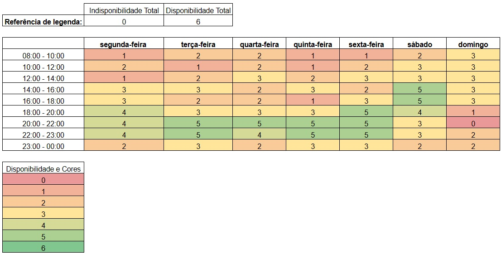

Heatmap
O heatmap da Figura 1 tem por objetivo transparecer os horários livres dos membros da equipe, dessa forma é possível organizar e documentar os melhores dias e horários para a realização de reuniões.
|  |
|---|
| Figura 1: HeatMap; Fonte: Edilberto Cantuaria |
Histórico de Versão
| Versão | Data | Descrição | Autor | Revisor |
|---|---|---|---|---|
| 1.0 | 19/09/2023 | Criação da página | Edilberto Cantuaria | Artur Seppa |
| 1.0 | 25/10/2023 | Padronização da legenda | Edilberto Cantuaria | Rafael Xavier |